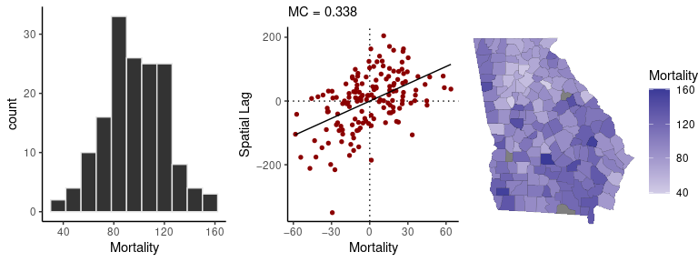
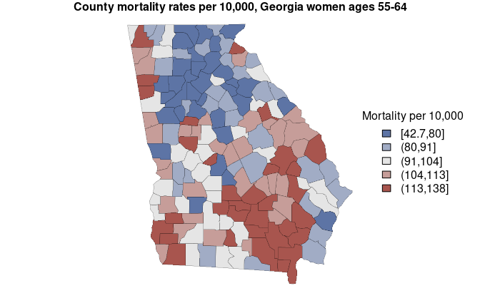

geostan: Bayesian spatial analysis
The geostan R package supports a complete spatial analysis workflow with Bayesian models for areal data, including a suite of functions for visualizing spatial data and model results. geostan models were built using Stan, a state-of-the-art platform for Bayesian modeling.
Introductions to the software can be found at r-spatial.org and in the package vignettes.
Features include:
- Spatial regression and disease mapping Statistical models for data recorded across areal units (states, counties, or census tracts) or networks, including spatial econometric models.
-
Spatial analysis tools Tools for visualizing and measuring spatial autocorrelation and map patterns, for exploratory analysis and model diagnostics.
- Observational uncertainty Incorporate information on data reliability, such as standard errors of American Community Survey estimates, into any geostan model.
- Missing and Censored observations Vital statistics and disease surveillance systems like CDC Wonder censor case counts that fall below a threshold number; geostan can model disease or mortality risk for small areas with censored observations or with missing observations.
- The RStan ecosystem Interfaces easily with many high-quality R packages for Bayesian modeling.
- Custom spatial models Tools for building custom spatial or network models in Stan.
For public health research, geostan complements the surveil R package for the study of time trends in disease incidence or mortality data.
Installation
There are two ways to install geostan: directly from the package github repository or from the Comprehensive R Archive Network (CRAN).
From CRAN
Using your R console, you can install geostan from CRAN:
install.packages("geostan")For most users, installing from CRAN is the recommended way to obtain geostan.
From github
You can also install geostan from github:
if (!require('devtools')) install.packages('devtools')
devtools::install_github("connordonegan/geostan")This requires compilation of the Stan models. If you are using Windows and installing with install_github, you may need to install Rtools first (this is not needed when installing from CRAN). To install Rtools:
- Visit the Rtools site: https://cran.r-project.org/bin/windows/Rtools/
- Select the version that corresponds to the version of R that you have installed (e.g., R 4.3).
- After selecting the correct version, look for the “Install Rtools” section (just below the introductory text) and click on the “installer” to download it. For example, for Rtools43 (for R version 4.3), click on “Rtools43 installer.”
- Go to the
.exefile you just downloaded and double-click to begin installation of Rtools.
If you are using Mac and installing with install_github then you may need to install Xcode Command Line Tools first.
Support
All functions and methods are documented (with examples) on the website reference page. See the package vignettes for more on exploratory spatial analysis, spatial measurement error models, spatial regression with raster layers, and building custom spatial model in Stan.
To ask questions, report a bug, or discuss ideas for improvements or new features please visit the issues page, start a discussion, or submit a pull request.
Usage
Load the package and the georgia county mortality data set:
This has county population and mortality data by sex for ages 55-64, and for the period 2014-2018. As is common for public access data, some of the observations missing because the CDC has censored them to protect privacy.
The sp_diag function provides visual summaries of spatial data, including a histogram, Moran scatter plot, and map. The Moran scatter plot displays the values against a summary of their neighboring values, so that the slope of the regression line gives a measure of their degree of autocorrelation.
Here is a quick visual summary of crude female mortality rates (as deaths per 10,000):
# create adjacency matrix ("B" is for binary)
C <- shape2mat(georgia, style = "B")
#> Contiguity condition: queen
#> Number of neighbors per unit, summary:
#> Min. 1st Qu. Median Mean 3rd Qu. Max.
#> 1.000 4.000 5.000 5.409 6.000 10.000
#>
#> Spatial weights, summary:
#> Min. 1st Qu. Median Mean 3rd Qu. Max.
#> 1 1 1 1 1 1
# crude mortality rate per 10,000 at risk
mortality_rate <- georgia$rate.female * 10e3
# quick spatial diagnostics
sp_diag(mortality_rate, georgia, w = C, name = "Mortality")
#> 3 NA values found in x will be dropped from data x and from matrix w (nb: this disrupts row-standardization of w)
#> Warning: Removed 3 rows containing non-finite outside the scale
#> range (`stat_bin()`).
Mortality rates and other health statistics for counties are, in many cases, highly unstable estimates that cannot be relied upon for public advisories or inference (due to small population sizes). Hence, we need models to make inferences from small area data.
The following code fits a spatial conditional autoregressive (CAR) model to female county mortality data. These models are used for estimating disease risk in small areas like counties, and for analyzing covariation of health outcomes with other area variables. The R syntax for fitting the models is similar to using lm or glm. We provide the population at risk (the denominator for mortality rates) as an offset term, using the log-transform.
In our Georgia mortality data, three of the observations are missing because they have been censored; per CDC criteria, this means that there were 9 or fewer deaths in those counties. By using the censor_point argument and setting it to censor_point = 9, we can easily obtain estimates for the censored counties (along with all the others) using models account for the censoring process:
# prepare a list of data for CAR models in Stan
cars <- prep_car_data(C)
#> Range of permissible rho values: -1.661, 1
# fit the model to female mortality rates
fit <- stan_car(deaths.female ~ offset(log(pop.at.risk.female)),
censor_point = 9,
data = georgia,
car_parts = cars,
family = poisson(),
iter = 1e3, # no. MCMC samples
quiet = TRUE) # to silence printing
#> 3 NA values identified in the outcome variable
#> Found in rows: 55, 126, 157
#> Warning: Tail Effective Samples Size (ESS) is too low, indicating posterior variances and tail quantiles may be unreliable.
#> Running the chains for more iterations may help. See
#> https://mc-stan.org/misc/warnings.html#tail-essPassing a fitted model to the sp_diag function will return a set of diagnostics for spatial models:
sp_diag(fit, georgia)
#> 3 NA values found in x will be dropped from data x and from matrix w (nb: this disrupts row-standardization of w)
#> Warning: Removed 3 rows containing missing values or values
#> outside the scale range (`geom_pointrange()`).
The print method returns a summary of the probability distributions for model parameters, as well as Markov chain Monte Carlo (MCMC) diagnostics from Stan (Monte Carlo standard errors of the mean se_mean, effective sample size n_eff, and the R-hat statistic Rhat):
print(fit)
#> Spatial Model Results
#> Formula: deaths.female ~ offset(log(pop.at.risk.female))
#> Likelihood: poisson
#> Link: log
#> Spatial method: CAR
#> Residual Moran Coefficient: 0.0018845
#> Observations: 156
#>
#> Inference for Stan model: foundation.
#> 4 chains, each with iter=1000; warmup=500; thin=1;
#> post-warmup draws per chain=500, total post-warmup draws=2000.
#>
#> mean se_mean sd 2.5% 20% 50% 80% 97.5% n_eff Rhat
#> intercept -4.660 0.010 0.124 -4.844 -4.728 -4.671 -4.614 -4.415 152 1.026
#> car_rho 0.926 0.002 0.057 0.788 0.884 0.938 0.974 0.997 982 1.004
#> car_scale 0.457 0.001 0.035 0.392 0.427 0.454 0.485 0.533 1869 1.001
#>
#> Samples were drawn using NUTS(diag_e) at Mon Dec 16 09:54:18 2024.
#> For each parameter, n_eff is a crude measure of effective sample size,
#> and Rhat is the potential scale reduction factor on split chains (at
#> convergence, Rhat=1).To extract estimates of the county mortality rates from this, we apply the fitted method - in this case, the fitted values from the model are the estimates of the county mortality rates. Multiplying them by 10,000 gives mortality rate per 10,000 at risk:
# mortality rates per 10,000 at risk
mortality_est <- fitted(fit) * 10e3
# display rates with county names
county_name <- georgia$NAME
head( cbind(county_name, mortality_est) )
#> county_name mean sd 2.5% 20% 50%
#> fitted[1] Crisp 101.50235 9.768276 83.48211 93.29802 101.13725
#> fitted[2] Candler 137.44182 16.379395 109.04185 123.43893 136.64743
#> fitted[3] Barrow 94.08506 5.891425 82.33040 89.33693 93.98641
#> fitted[4] DeKalb 59.79313 1.558891 56.90628 58.48399 59.77942
#> fitted[5] Columbia 53.28957 3.303941 46.98875 50.43938 53.23976
#> fitted[6] Cobb 54.14148 1.534015 51.08186 52.88618 54.14383
#> 80% 97.5%
#> fitted[1] 109.73107 121.20084
#> fitted[2] 151.70773 170.97029
#> fitted[3] 99.08237 105.55138
#> fitted[4] 61.05865 62.84313
#> fitted[5] 55.97967 60.21512
#> fitted[6] 55.40963 57.25577The mortality estimates are stored in the column named “mean”, and the limits of the 95% credible interval are found in the columns “2.5%” and “97.5%”. Here we create a map of estimates (with some help from sf package):
library(sf)
#> Linking to GEOS 3.10.2, GDAL 3.4.3, PROJ 8.2.1; sf_use_s2() is TRUE
# put estimates into bins for map colors
x <- mortality_est$mean
brks <- quantile(x, probs = c(0, 0.2, 0.4, 0.6, 0.8, 1))
est_cut <- cut(x, breaks = brks, include.lowest = TRUE)
# assign colors to values
rank <- as.numeric( est_cut )
pal_fun <- colorRampPalette( c("#5D74A5FF", "gray90", "#A8554EFF") )
pal <- pal_fun( max(rank) )
colors <- pal[ rank ]
# set plot margins
og=par(mar=rep(1, 4))
# get boundaries
geom <- sf::st_geometry(georgia)
# map estimates
plot(geom,
lwd = 0.2,
col = colors)
# legend
legend("right",
fill = pal,
title = 'Mortality per 10,000',
legend = levels(est_cut),
bty = 'n'
)
mtext('County mortality rates per 10,000, Georgia women ages 55-64', side = 3, font = 2)
# reset margins
par(og)Using the credible intervals, we can complement our map with a point-interval plot:
# order counties by mortality rate
index <- order(mortality_est$mean, decreasing = TRUE)
dat <- mortality_est[index, ]
# gather estimate with credible interval (95%)
est <- dat$mean
lwr <- dat$`2.5%`
upr <- dat$`97.5%`
y <- seq_along(county_name)
x_lim <- c(min(lwr), max(upr)) |>
round()
og=par(mar = c(3, 0, 0, 0))
# points
plot(est,
y,
pch = 5,
col = 'gray50',
bty = 'L',
axes = FALSE,
xlim = x_lim,
ylab = NA,
xlab = NA)
# intervals
segments(x0 = lwr, x1 = upr,
y0 = y, y1 = y,
col = colors[ index ])
# x axis
axis(1, at = seq(x_lim[1], x_lim[2], by = 20))
mtext('County mortality rates per 10,000, Georgia women ages 55-64', side = 1, line = 2)
par(og)More details and demonstrations can be found in the package help pages and vignettes.
Citing geostan
If you use geostan in published work, please include a citation.
Donegan, Connor (2022) “geostan: An R package for Bayesian spatial analysis” The Journal of Open Source Software. 7, no. 79: 4716. https://doi.org/10.21105/joss.04716.

@Article{,
title = {{geostan}: An {R} package for {B}ayesian spatial analysis},
author = {Connor Donegan},
journal = {The Journal of Open Source Software},
year = {2022},
volume = {7},
number = {79},
pages = {4716},
doi = {10.21105/joss.04716},
}